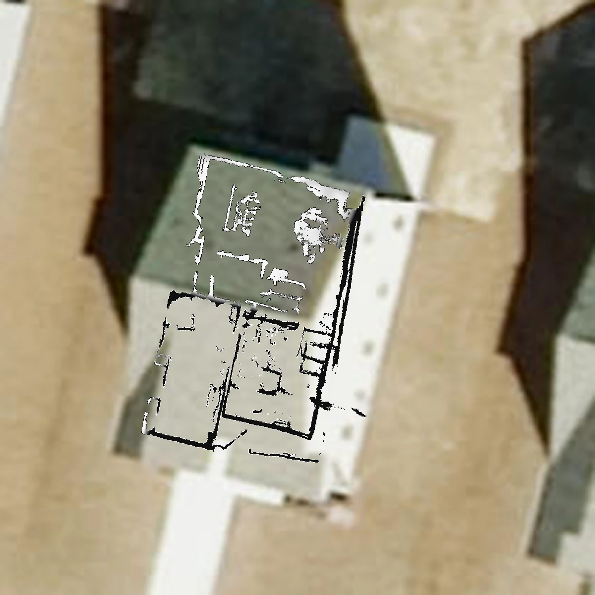
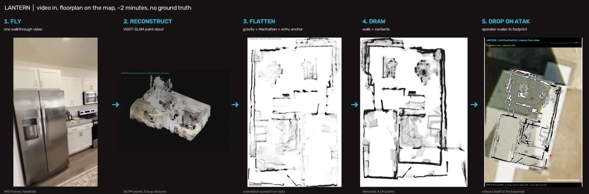
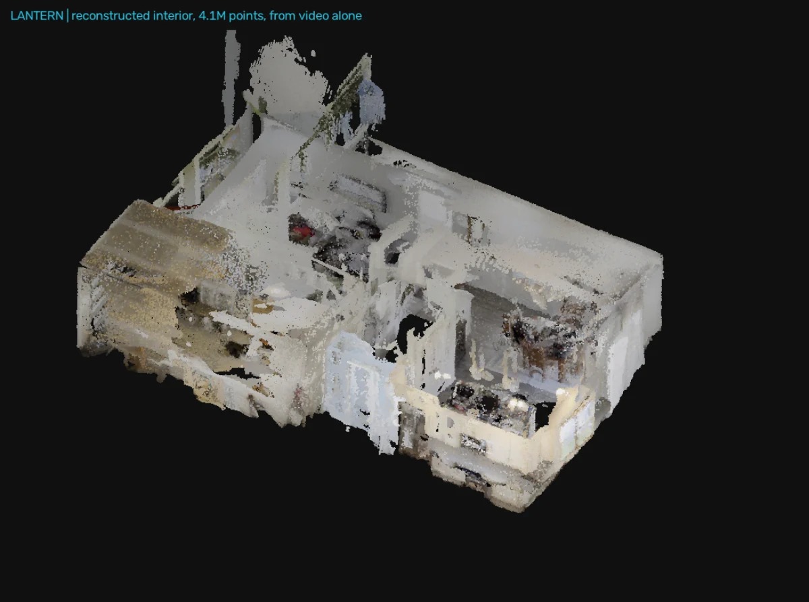
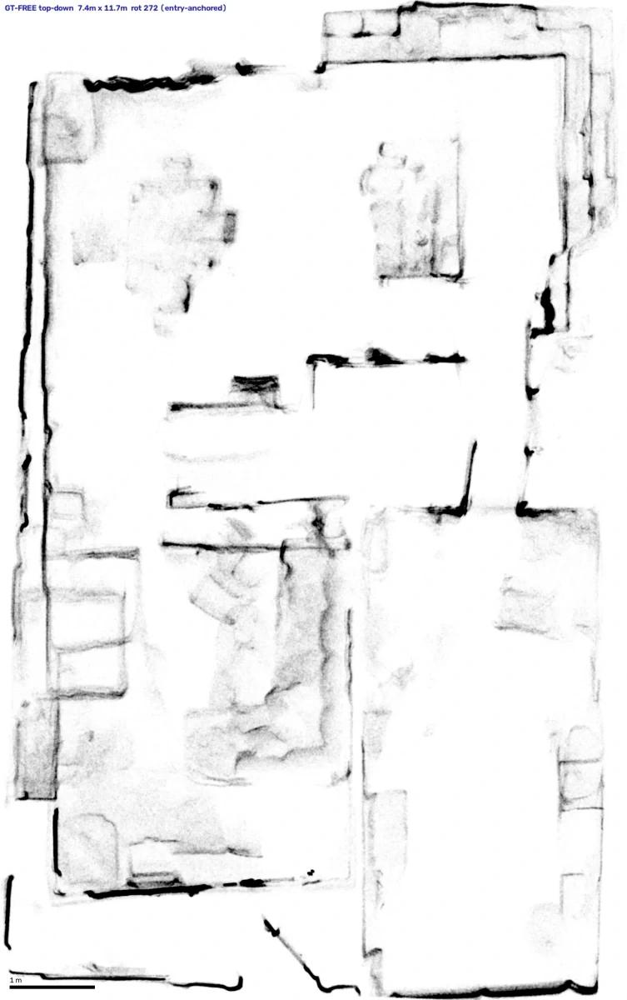

Lantern · Alpha
One drone goes in. Everybody gets the floorplan.
A small drone flies the structure. The video hits an edge node on the tactical network and comes back as a georeferenced interior floorplan — on the map, in front of the team and C2, while the element is still on the objective.
No LiDAR. No scanner. No survey. It runs on the FPV video operators are already shooting.
2 min
Video to floorplan
0
Measurements required
1
Laptop — no cloud
No LiDAR
Camera video only
The flight already happened. The knowledge left with it.
Today
The operator watches the feed and forms a picture. The feed ends. Nothing persists. The next element to look at that same building starts from a blank satellite tile, and everything the first flight learned is gone.
With Lantern
The same video becomes a floorplan on the shared map. C2 sees it, the follow-on element briefs from it, and it is still there next week. One flight informs everyone who comes after.
Video in, floorplan on the map
Every panel below is real output from one handheld walkthrough of a single house. No staging, and no reference geometry supplied to the model at any point.

Reconstruct
A dense three-dimensional model is built from the video alone — walls, furniture, fixtures — with no depth sensor and no external reference.
Orient
Which way is up, and which way is north, are recovered from the data itself. The camera’s own height and its heading through the entrance resolve the ambiguity without a compass.
Place
The result is written as a georeferenced overlay that imports straight into ATAK and WinTAK. The operator drags it onto the footprint and it is done.
Lands on the map the team already uses
No new application to learn and no new device to carry. Lantern writes a georeferenced overlay in the formats ATAK and WinTAK already consume.
The overlay reads itself against the imagery underneath — light strokes over a dark roof, dark strokes over bright concrete — so it stays legible wherever it is placed.
Processing runs on an edge device on the tactical network. The video never leaves the objective and no connectivity is required.
From a walk-through to a shared picture


The sensor is the one they already have
Every serious interior-mapping system on the market answers the hard part with hardware — a LiDAR puck, a depth camera, a scanner on a tripod. That means a payload to buy, integrate, power, carry and maintain, on an airframe that may not come back.
No new payload
Lantern reads the camera feed the aircraft already carries. Nothing is added to the airframe, so nothing is added to its weight, endurance or unit cost.
Attritable by design
The intelligence lives in the software, not the aircraft. A cheap drone that does not come home costs you a cheap drone.
Works on the fleet you own
Anything that records usable video is a candidate. No procurement cycle, no integration programme, no waiting on a vendor.
Built for anyone who needs the inside of a building
Structure reconnaissance
Turn a pre-entry or post-clearance flight into a floorplan the next element can brief from.
Training site documentation
Capture shoot houses, breach facilities and mock urban sites without pulling a survey team.
Facility survey
Produce interior layouts of structures where no drawing exists, or where the drawing no longer matches the building.
Measured, not asserted
Accuracy is scored against an independent laser scan of the same building. The scan is used for measurement only — an automated check fails the build if any reference geometry reaches the product path.
That guardrail exists for a reason. A floorplan quietly fitted to a known answer always looks excellent and teaches you nothing. We would rather publish a real number.
Where Lantern is today
Lantern is in alpha and we would rather state its limits than have a customer find them.
Demonstrated
- Interior reconstruction from ordinary video, no depth sensor, no supplied reference
- Orientation recovered from the data alone
- Georeferenced overlay imported and rendered in WinTAK
- End to end in roughly two minutes on a single laptop
Not yet
- Absolute scale is not yet reliable; the operator sets it when placing the overlay
- Interior proportions carry roughly ten percent error against a laser scan
- Long featureless spaces such as pipes and tunnels are not recoverable from a single camera
- Validated on a small number of structures — broader trials underway
Send us a video. We will send back the floorplan.
Lantern is open for evaluation with partners working structure reconnaissance, facility survey and training-site documentation. Bring a building and we will show you the output from it.
Contact Ceradon SystemsSDVOSB · CAGE 179U9 · UEI UZA9PFJ9RDL6